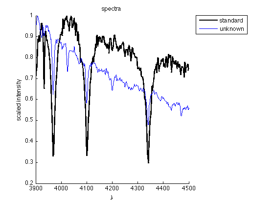
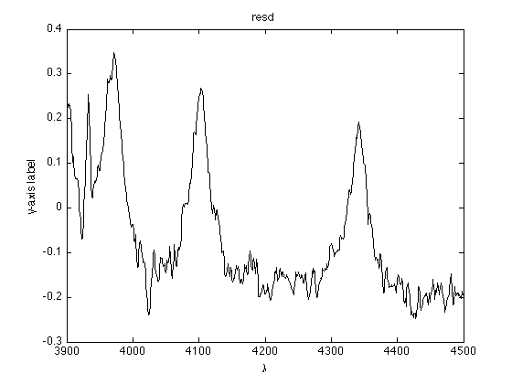
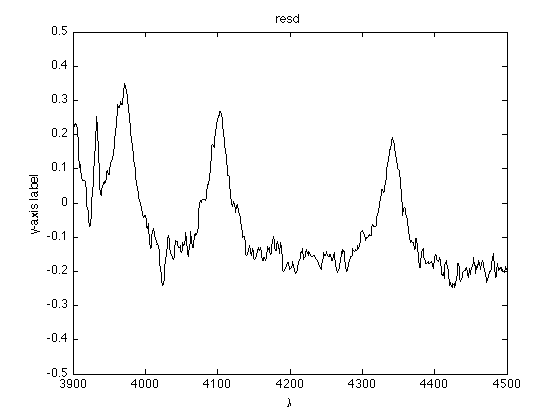

Plotting residuals and Writing script m-file
Contents
Calculate the residuals
A good way to compare the unknown and standard spectra is using the idea of residuals. First, remind yourself about how these following commands work: (note that you may have to change the slash to the backslash if you are using Windows!)
unkn = load('unknowns/unknown1.txt'); stdd = load('standards/a1.txt'); figure(1); clf; hold on; plot(stdd(:,1), ... ) plot(unkn(:,1), ... ) xlabel(' ... '); ylabel(' ... '); title(' ... '); legend( ... );
Basically, residual is the difference between the two data sets you are comparing:
resd = unkn(:,2) - stdd(:,2);
You can plot resd to see its behavior:
figure(2); clf; plot(unkn(:,1), resd, 'k-'); xlabel(' ... '); ylabel(' ... '); title(' ... ');
Obviousely, we must look for a specific standard spectrum which has resd around zero, without any peaks. To compare resd from different standard spectra easily, you should keep the range of the y-axis constant, and centered at y=0:
ylim([-0.5 0.5])
Therefore, you can quickly figure out whether these unknown and standard spectra are the same spectrum type.
Using script m-file
Now you are a master of comparing data. However, in this lab, you are asked to compare 5 unknown spectra to 13 standard spectra, which means that you might have to make 5x13=65 figures to find out the spectrum type for each unknown spectrum! You surely do not want to type plot(...) 65x2=130 times in the Command Window.
Instead, we can write a simple script m-file to include all plotting commands, and all you need to do is change the filename in the load command each time you consider a different spectrum.
Be sure to add
clear;
as the first line of your m-file, so the previous run won't affect the current one. Then your m-file should simply include two lines of loading files:
unkn = load( ... ); stdd = load( ... );
and one line about setting the figure:
figure(1); clf; hold on
and two lines of plotting (choose your favorite line specification!) and the graph labels/title/legend:
plot( ... ) plot( ... ) xlabel( ... ); ylabel( ... ); title( ... ); legend( ... );
To show the residuals, set up another figure window:
figure(2); clf;
and plot your residuals, set up y-coordinate limit, and maybe give it labels and a title:
plot( ... ); ylim( ... ); xlabel( ... ); ylabel( ... ); title( ... );
Finally, don't forget to add .m when you save your m-file!
Once you have your .m file, go to Cell -> Evaluate Current Cell to run it, or find the icon in the Toolbar. Now you can see why script M-files are important: just change the file name and run the .m file and your figures will show!